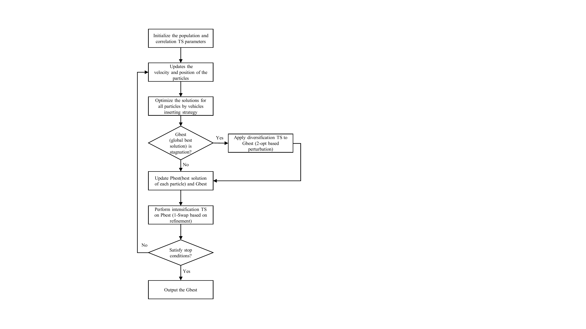
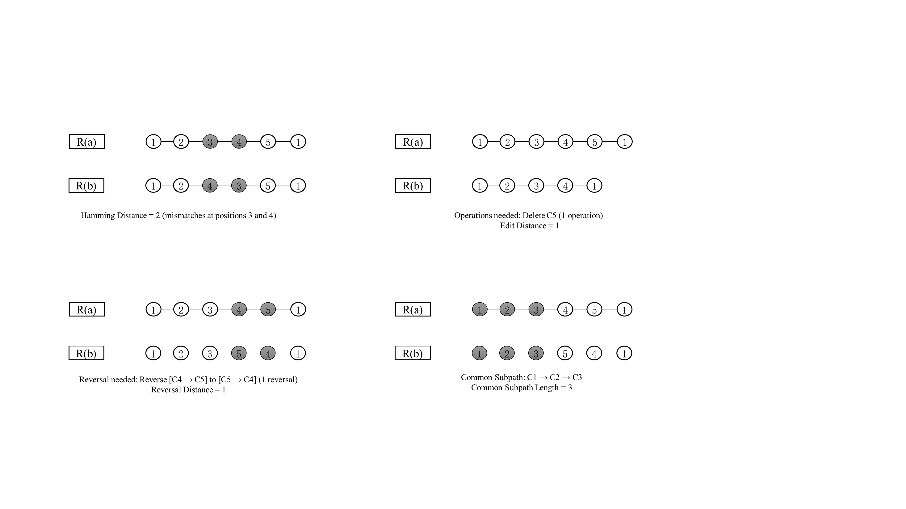
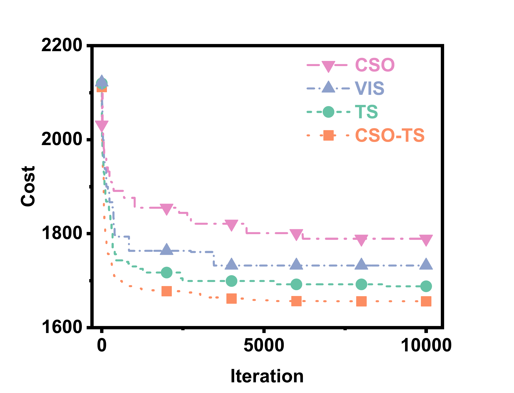
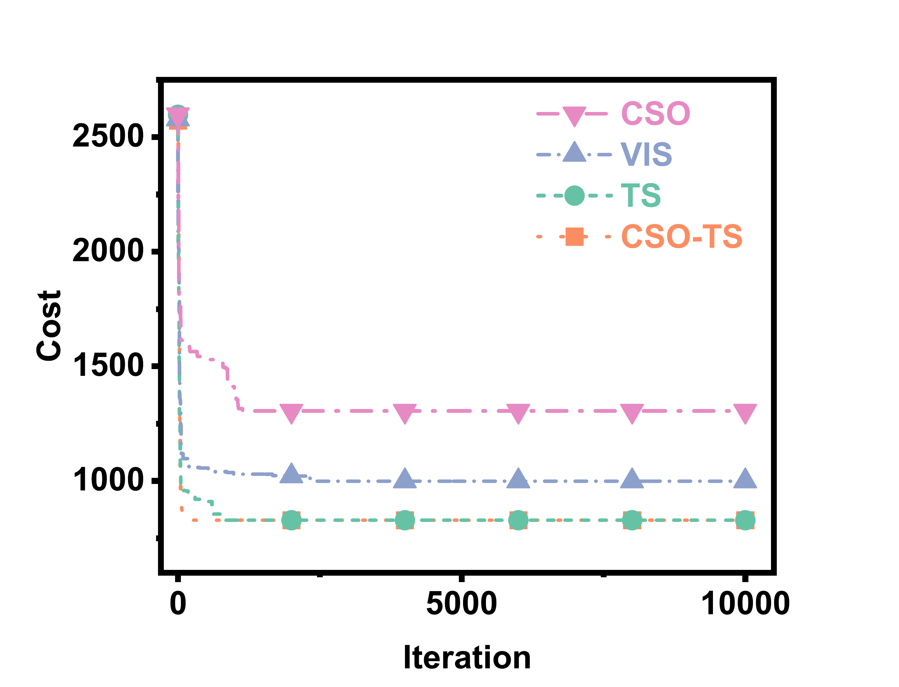
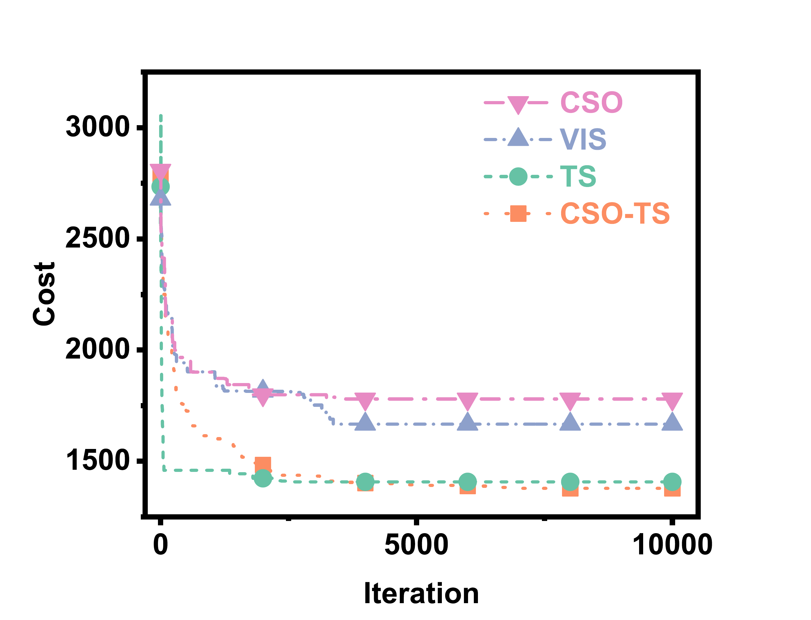
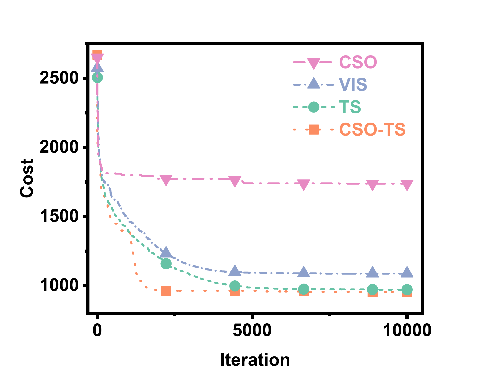

已发表研究室
Synergistic design for VRPTW
面向带时间窗车辆路径问题，设计基于路径多样性指标与自适应邻域搜索的竞争群优化方法。
研究概览
这项研究关注带时间窗车辆路径问题（VRPTW），这是物流配送和交通运输系统中的经典 NP-hard 组合优化问题。
提出的 CSO-TS 方法将竞争群优化、禁忌搜索、自适应邻域操作和路径多样性指标结合起来，用于平衡全局探索与局部开发。
公开亮点
- 发表于 Electronic Research Archive。
- 该期刊收录于 SCIE，属于美国 JCR Q1 分区。
- DOI：10.3934/era.2026116。
- 在 56 个 Solomon benchmark 实例上测试。
- 获得 23 个最优解。
- 与 9 个先进算法进行对比，并表现出有竞争力的解质量。
方法概述
- 将竞争群优化思想适配到离散 VRPTW 搜索中。
- 引入禁忌搜索机制进行局部精修。
- 设计自适应邻域操作策略。
- 利用多种路径差异信号构建路径多样性指标。
论文图示
这些图来自已发表论文，用来快速展示方法流程、问题建模和 Solomon benchmark 上的路径结果。






引用信息
Liang, F., Yu, F., Wu, H., Lan, S., Chen, Y., and Xia, X. Synergistic design for VRPTW: A competitive swarm optimizer guided by path diversity index and adaptive neighborhood search. Electronic Research Archive, 34(4): 2511-2538. DOI: 10.3934/era.2026116.